Rivière · 2025 – 26
4Dérives
CapteurGoPro, à hauteur d'yeux
Reconstruction4D Gaussian splatting
RenduFilm, essais 4D


Projet phare · 2025 – 26
Une descente de rivière filmée en GoPro à hauteur d'yeux, en trois saisons. Des essais en 4D Gaussian splatting prolongent l'espace hors du cadre.
Capteur · reconstruction · rendu
Rivière · 2025 – 26
Grands fonds · 2026
Rendu : Johann Arata, d'après des vidéos du Schmidt Ocean Institute
Littoral · 2025 – 26
Rendu : Johann Arata, d'après les photographies de Nicolas Floc'h
Recherche · 2024 – 25
Lab · relevé n° 01
Mémoire en cours : la reconstruction volumétrique du réel capturé (Gaussian splatting 3D et 4D) et la frontière entre captation, reconstruction et génération par IA.
Premier relevé : les essais en 4D Gaussian splatting de 4Dérives, qui prolongent l'espace hors du cadre.

Contact
arata.johann@gmail.com